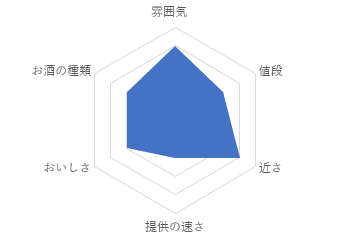
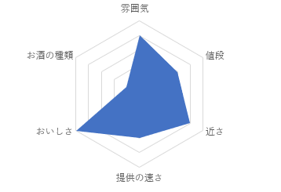
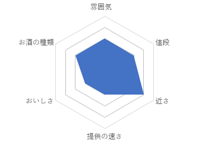
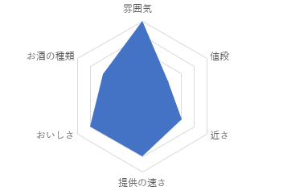
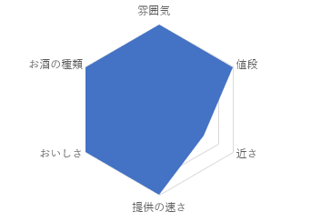
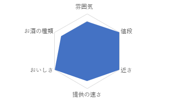

PM実験用HP
0.topへ
1.酔虎伝
2.本田商店
3.金の蔵
4.陣-ZIN-
5.半兵江
6.参佰宴
Tsudamuma City Site
ここはお酒好きな大学生のために
津田沼の居酒屋を紹介しています。
好きなお店をお探しください。
Presented by
矢吹研a班
小関菜月 西智也 小原洸
居酒屋紹介
ここからは、お店の紹介となります。
1.酔虎伝
津田沼駅 徒歩2分
17時~26時
043-479-5891
詳細サイト
宴会スペース完備はもちろん、
なんと１５０名様で
集まることができるお座敷があります。
また居酒屋では珍しい
リアルタイムで調理している所を
見られるオープンキッチン 付き‼

2.本田商店
津田沼駅 徒歩3分
17時~21時30分
050-3460-9667
詳細サイト
こだわりの焼き鳥が自慢、
なんとその値段99円‼
宴会席は４０名までOKです。
サブメニューにも力を入れていて、
満足感が
とても高いものばかりです。

3.金の蔵
津田沼駅 徒歩3分
15時~23時
050-5852-2956
詳細サイト
ちょっと早い時間から飲みたい
なんて時はこの居酒屋。
また、注文はなんとタッチパネル‼
店の人を呼ぶ必要がなく、
注文までの時間は最短です。

4.陣-ZIN-
津田沼駅 徒歩１分
昼 12時~16時
夜 17時~5時
050-3477-7373
詳細サイト
チーズフォンデュ付きの
女子会コースがとても人気!!
個室の居酒屋なので
ゆったりとした時間を
過ごせます。
クーポン利用で５００円で
２時間飲み放題もあるため
気軽に立ち寄ることができるはず‼

5.半兵江
津田沼駅 徒歩４分
17時~23時30分
043-774-1234
詳細サイト
古き良き昭和の時代を
イメージした珍しい居酒屋!!
昭和時代に流行った人気キャラクターや
俳優ポスターなどがありますよ。
いつもと違った体験ができるかも！？

6.元祖 参佰宴
津田沼駅 徒歩１分
17時~26時
050-5816-1773
詳細サイト
この居酒屋の特徴は...
なんと店内全品３００円!!
料理の提供も早く、
サクッと飲むにはピッタリ。
外にも座席があるので、
楽しく皆で
飲めます。
